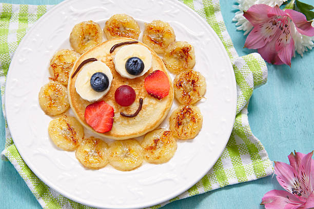
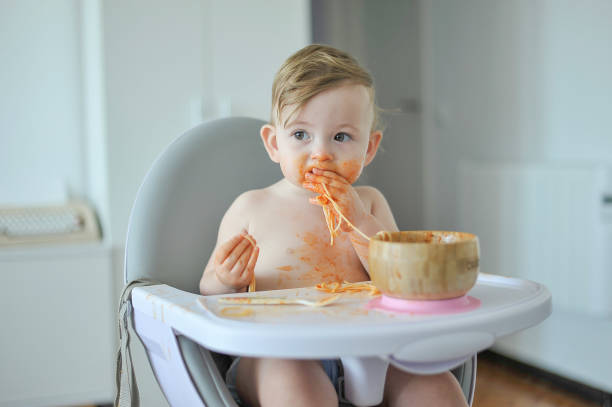

Recipes for 9-12 Months
Soft finger foods and nutritious combinations for your growing baby

Mini Banana Pancakes
Ingredients:
- 1 ripe banana, mashed
- 1 egg
- 2 tbsp whole wheat flour
- 1/4 tsp cinnamon
- Butter for cooking
Instructions:
- Mix mashed banana with egg
- Stir in flour and cinnamon
- Make small dollar-sized pancakes
- Cook until golden on both sides
- Cut into finger-sized strips
Tips:
Make sure pancakes are cool and cut into appropriate sizes. Perfect for baby-led weaning.

Soft Veggie Pasta
Ingredients:
- 1 cup small pasta shapes
- 1/2 cup carrots, finely diced
- 1/2 cup peas
- 1/4 cup corn
- 2 tbsp olive oil
Instructions:
- Cook pasta until very soft
- Steam vegetables until tender
- Mix pasta with vegetables
- Drizzle with olive oil
- Cut larger pieces if needed
Tips:
Choose small pasta shapes like stars or small shells. Ensure all pieces are soft and manageable.

Egg and Toast Fingers
Ingredients:
- 2 eggs
- 2 slices whole grain bread
- 1 tbsp butter
- Pinch of herbs (optional)
Instructions:
- Scramble eggs until fully cooked
- Toast bread lightly
- Spread butter on toast
- Top toast with scrambled eggs
- Cut into finger-sized strips
Tips:
Ensure eggs are fully cooked and toast is soft enough to gum. Great source of protein and iron.

Sweet Potato Sticks
Ingredients:
- 1 large sweet potato
- 1 tbsp olive oil
- Pinch of cinnamon (optional)
Instructions:
- Peel and cut into finger-sized sticks
- Toss with olive oil
- Bake at 375°F until very soft
- Cool completely before serving
Tips:
Make sure sticks are soft enough to squish between your fingers. Great for developing pincer grasp.

Fruity Yogurt Blend
Ingredients:
- 1/2 cup full-fat plain yogurt
- 1/4 cup mashed strawberries
- 1/4 banana, diced
- 1 tbsp ground oats
Instructions:
- Mash strawberries until smooth
- Mix with yogurt
- Add diced banana
- Sprinkle with ground oats
Tips:
Use whole milk yogurt for healthy fats. Ensure fruit pieces are small enough to prevent choking.

Tender Chicken and Rice
Ingredients:
- 1/2 cup cooked rice
- 1/4 cup shredded chicken
- 1/4 cup peas and carrots
- 2 tbsp breast milk or formula
Instructions:
- Cook rice until very soft
- Shred cooked chicken finely
- Steam vegetables until tender
- Mix all ingredients
- Add liquid for moisture
Tips:
Ensure chicken is very tender and finely shredded. Rich in protein and iron.